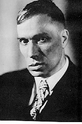
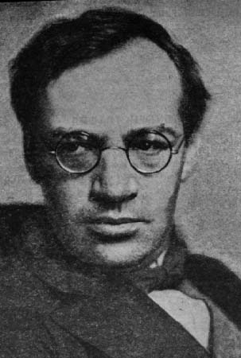
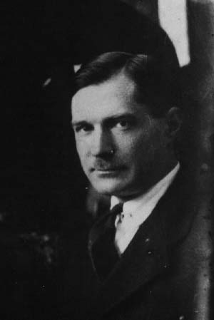
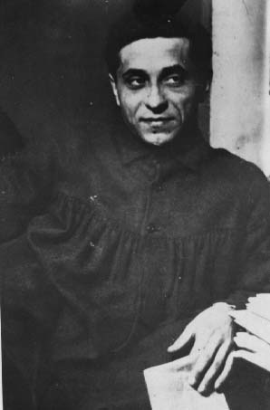

Page index / courses
1921-1930.html
RUSSIA: 1921-1930
Literature flourished in Russia during the 1920's as the Communist Party slightly eased up on restrictions on subject matter, although many authors were exiled and forced to leave Russia. Innovations were made by authors in both areas of poetry and prose. Click below to read compositions of authors of the 1920's.

Pilniak

Zamiatin- commentary

Zoschenko
